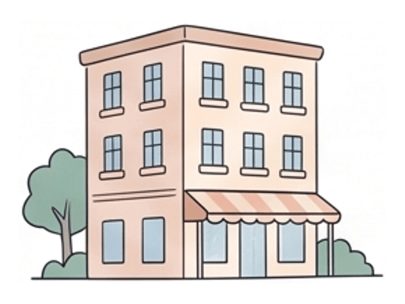
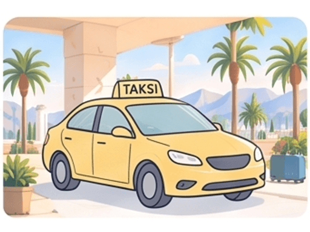
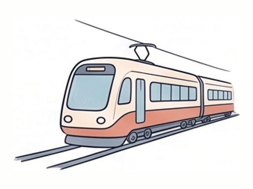
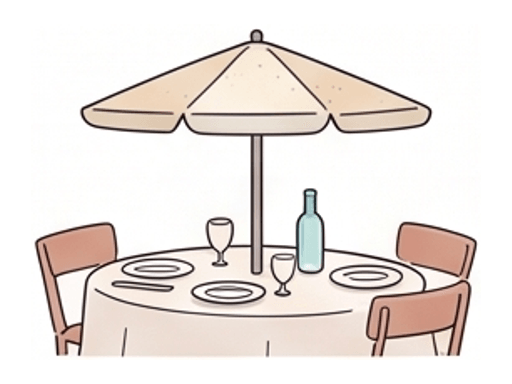

✨ ÖnerimizEn ucuz
Booking.com
Asakusa Ryokan
Asakusa · Senso-ji'ye 4 dk9,1Muhteşem · 400 yorum€120/ gece · €360
 direktTokyoHND · 19:25+1direktTokyoHND · 19:25+1direktTokyoHND · 19:25+11 aktarmaTokyoHND · 07:00+11 aktarmaTokyoHND · 07:00+11 aktarmaTokyoHND · 22:30+11 aktarmaTokyoHND · 22:30+12 aktarmaTokyoHND · 09:05+12 aktarmaTokyoHND · 09:05+1direktİstanbulIST · 17:40direktİstanbulIST · 17:40
direktTokyoHND · 19:25+1direktTokyoHND · 19:25+1direktTokyoHND · 19:25+11 aktarmaTokyoHND · 07:00+11 aktarmaTokyoHND · 07:00+11 aktarmaTokyoHND · 22:30+11 aktarmaTokyoHND · 22:30+12 aktarmaTokyoHND · 09:05+12 aktarmaTokyoHND · 09:05+1direktİstanbulIST · 17:40direktİstanbulIST · 17:40
 Senin linkinSenin linkin
Senin linkinSenin linkin

 Bilet alındı Bilet alındı Bilet alındı Bilet alındı Bilet alındı✨ ÖnerimizSSabine ekledi✨ AI önerisi✨ AI önerisiSenin linkin Bilet alındı Bilet alındı Bilet alındı✨ Önerimiz✨ AI önerisi✨ AI önerisi
Bilet alındı Bilet alındı Bilet alındı Bilet alındı Bilet alındı✨ ÖnerimizSSabine ekledi✨ AI önerisi✨ AI önerisiSenin linkin Bilet alındı Bilet alındı Bilet alındı✨ Önerimiz✨ AI önerisi✨ AI önerisi Gezilecek
Gezilecek
RestoranGezilecekGezilecekGezilecekGezilecekGezilecekVize gerekmiyorTürk pasaportuyla 90 güne kadar
 ✨ ÖnerimizEn ucuz✨ AI önerisi✨ AI önerisi
✨ ÖnerimizEn ucuz✨ AI önerisi✨ AI önerisi